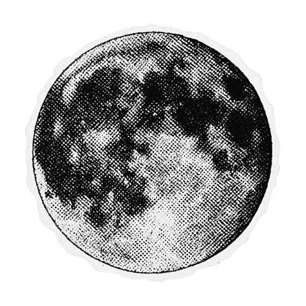

Luna llena estilo/semitono
Sticker de la luna llena en estilo retro / semitono (halftone). El diseño destaca por utilizar un patrón de puntos negros para recrear las texturas de la superficie, los cráteres y las sombras lunares sobre un fondo blanco recortado, simulando el efecto de impresión de una fotocopia clásica o estética urbana de collage.